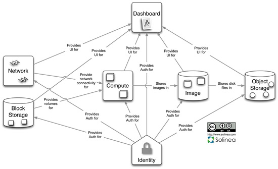
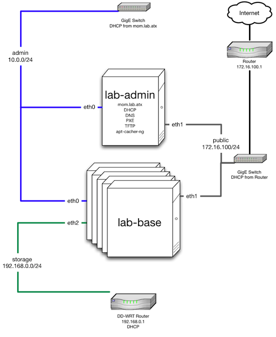

Chef for OpenStack¶
OpenStack is a cloud operating system that provides support for provisioning large networks of virtual machines, pluggable and scalable network and IP management, and object and block storage.
This page describes how to use the Chef for OpenStack cookbooks as the basis for managing an OpenStack deployment with Chef, as well as how to participate in the development and maintenance process of these cookbooks. For more information about OpenStack itself, see http://docs.openstack.org.
Architecture¶
This section describes the supported deployment scenarios for Chef for OpenStack and is based on the OpenStack Grizzly release. This is going to be updated for both OpenStack Juno and OpenStack Kilo at a later date.
There are a number of configuration options available, including block storage, hypervisors, databases, message queuing, networking, object storage, source builds, and so on. The current supported deployment scenarios include:
| Scenario | Description |
|---|---|
| All-in-One Compute | A full Compute deployment on a single host. No object storage. |
| Single Controller + N Compute | A single controller with 1 or more Compute nodes. No object storage. |
| Vagrant | A virtual instance on a single host using Vagrant. |
One Controller + N Compute¶
The Single Controller + N Compute (aka 1+N) configuration refers to a single controller and variable number of nodes. This is suitable for relatively small deployments, such as those with fewer than twenty nodes. The size of the deployment depends on the nature of the workload. Compute nodes should typically be given more substantial hardware than the controller node.
- On the Controller Compute (services, not the hypervisor), Dashboard, Identity, Image, and Network. The database and messaging services also run on the Controller.
- On the Compute Nodes Compute (hypervisor, not the services)
- Excluded Object Storage, Metering, and Orchestration
All-in-One Compute¶
All-in-One Compute configurations are appropriate for small scale deployments like proof of concept projects, dedicated fenced development environments, or when the host will be a virtual machine. This machine need not be large, but it must be sufficient to launch a few virtual instances, assuming those instances are only used for testing purposes. This configuration is a good way to familiarize yourself with the basics of Chef for OpenStack.
The All-in-One Compute configuration may be used for testing with Vagrant.
- On the Controller Compute, Dashboard, Identity, Image, and Network. The database and messaging services also run on the node.
- Excluded Block Storage, Object Storage, Metering, and Orchestration
Roles¶
There is an allinone-compute role in the OpenStack chef-repo. This will deploy all of the services for Nova compute to function on a single box. The run-list is the os-compute-single-controller and os-compute-worker roles.
Environments¶
The Vagrant configuration uses its own vagrant environment.
There is an allinone example environment that is currently under development.
Vagrant¶
Vagrant (http://www.vagrantup.com) is a virtualization framework for managing development environments, it may be used for testing the All-in-One configuration in the OpenStack chef-repo. Vagrant is an unsupported external third-party tool that may be used with Chef, but is not required for using the OpenStack chef-repo.
Vagrantfile¶
Vagrant uses a Vagrantfile for managing its configuration. Within the OpenStack chef-repo there is a Vagrantfile that configures the VirtualBox virtual machine for our purposes. A few parts of that file are listed here:
Vagrant.require_plugin 'vagrant-berkshelf'
Vagrant.require_plugin 'vagrant-chef-zero'
Vagrant.require_plugin 'vagrant-omnibus'
Vagrant.configure('2') do |config|
# Berkshelf plugin configuration
config.berkshelf.enabled = true
# Chef-Zero plugin configuration
config.chef_zero.enabled = true
config.chef_zero.chef_repo_path = '.'
# Omnibus plugin configuration
config.omnibus.chef_version = :latest
This is enabling and configuring the use of the Berkshelf, chef-zero and omnibus installer plugins for Vagrant.
# Port forwarding rules, for access to openstack services
config.vm.network 'forwarded_port', guest: 443, host: 8443 # dashboard-ssl
config.vm.network 'forwarded_port', guest: 4000, host: 4000 # chef-zero
config.vm.network 'forwarded_port', guest: 8773, host: 8773 # compute-ec2-api
config.vm.network 'forwarded_port', guest: 8774, host: 8774 # compute-api
This forwards ports from the Vagrant virtual machine for accessing the OpenStack dashboard and APIs. You may also access the chef-zero installation with a custom knife.rb configuration file.
# OpenStack-related settings
config.vm.network 'private_network', ip: '33.33.33.60'
config.vm.network 'private_network', ip: '192.168.100.60'
config.vm.provider 'virtualbox' do |vb|
vb.customize ['modifyvm', :id, '--cpus', 2]
vb.customize ['modifyvm', :id, '--memory', 2048]
vb.customize ['modifyvm', :id, '--nicpromisc2', 'allow-all']
vb.customize ['modifyvm', :id, '--nicpromisc3', 'allow-all']
end
This creates additional network cards and networks for the Vagrant virtual machine and increases the available memory and CPUs.
chef_environment = 'vagrant'
chef_run_list = [ 'role[allinone-compute]' ]
# Ubuntu 12.04 Config
config.vm.define :ubuntu1204 do |ubuntu1204|
ubuntu1204.vm.hostname = 'ubuntu1204'
ubuntu1204.vm.box = 'opscode-ubuntu-12.04'
ubuntu1204.vm.box_url = 'https://opscode-vm-bento.s3.amazonaws.com/vagrant/opscode_ubuntu-12.04_provisionerless.box'
ubuntu1204.vm.provision :chef_client do |chef|
chef.environment = chef_environment
chef.run_list = chef_run_list.unshift('recipe[apt::cacher-client]')
end
end
end
Vagrant is configured to use the chef_client provisioner with the vagrant environment and the allinone-compute role for the run_list. The VirtualBox images used are provided by the Bento project (https://github.com/chef/bento).
Install¶
Vagrant supports a number of virtualization and cloud back-ends. For our purposes VirtualBox (https://www.virtualbox.org) is used.
Install Vagrant 1.2.1 or later from packages. You may download it from https://www.vagrantup.com/downloads.html.
Our test configuration requires a number of Vagrant plugins, install the following plugins in exactly this order:
$ vagrant plugin install vagrant-omnibus
$ vagrant plugin install vagrant-chef-zero
$ vagrant plugin install vagrant-berkshelf
Environments¶
The environment that is used when testing Vagrant with upstream cookbooks and the reference chef-repo is shown below. It defines the network and database settings that are used with OpenStack. The networks will be used in the libraries provided by the osops-utils cookbook. The following example shows a FlatDHCP with two physical networks.
name 'vagrant'
override_attributes(
'mysql' => {
'allow_remote_root' => true,
'root_network_acl' => '%'
},
'openstack' => {
'developer_mode' => true,
'identity' => {
'catalog' => {
'backend' => 'templated'
},
},
'image' => {
'image_upload' => true,
'upload_images' => ['cirros'],
'upload_image' => {
'cirros' => 'https://launchpad.net/cirros/trunk/0.3.0/+download/cirros-0.3.0-x86_64-disk.img'
},
'identity_service_chef_role' => 'allinone-compute'
},
'block-storage' => {
'keystone_service_chef_role' => 'allinone-compute'
},
'dashboard' => {
'keystone_service_chef_role' => 'allinone-compute'
},
'network' => {
'rabbit_server_chef_role' => 'allinone-compute'
},
'compute' => {
'identity_service_chef_role' => 'allinone-compute',
'network' => {
'fixed_range' => '192.168.100.0/24',
'public_interface' => 'eth2'
},
'config' => {
'ram_allocation_ratio' => 5.0
},
'libvirt' => {
'virt_type' => 'qemu'
},
'networks' => [
{
'label' => 'public',
'ipv4_cidr' => '192.168.100.0/24',
'num_networks' => '1',
'network_size' => '255',
'bridge' => 'br100',
'bridge_dev' => 'eth2',
'dns1' => '8.8.8.8',
'dns2' => '8.8.4.4'
}
]
}
}
)
Usage¶
From the OpenStack chef-repo, launch the ubuntu1204 virtual machine with Vagrant. This will take several minutes as it does the chef-client run for the allinone-compute.
$ vagrant up ubuntu1204
SSH into the ubuntu1204 virtual machine with Vagrant.
$ vagrant ssh ubuntu1204
Welcome to Ubuntu 12.04.2 LTS (GNU/Linux 3.5.0-23-generic x86_64)
* Documentation: https://help.ubuntu.com/
96 packages can be updated.
48 updates are security updates.
Last login: Sat May 11 05:55:03 2013 from 10.0.2.2
vagrant@ubuntu1204:~$
All commands after this are actually run from within the VM. sudo to the root user and source the openrc file to configure the shell environment for OpenStack.
vagrant@ubuntu1204:~$ sudo su -
root@ubuntu1204:~# source /root/openrc
There are several basic checks that may be run to establish that the OpenStack deployment is operating properly. List the Nova compute services that are running:
root@ubuntu1204:~# nova service-list
+------------------+------------+----------+---------+-------+----------------------------+
| Binary | Host | Zone | Status | State | Updated_at |
+------------------+------------+----------+---------+-------+----------------------------+
| nova-cert | ubuntu1204 | internal | enabled | up | 2013-11-25T04:35:04.000000 |
| nova-compute | ubuntu1204 | nova | enabled | up | 2013-11-25T04:35:07.000000 |
| nova-conductor | ubuntu1204 | internal | enabled | up | 2013-11-25T04:35:00.000000 |
| nova-consoleauth | ubuntu1204 | internal | enabled | up | 2013-11-25T04:35:05.000000 |
| nova-network | ubuntu1204 | internal | enabled | up | 2013-11-25T04:35:07.000000 |
| nova-scheduler | ubuntu1204 | internal | enabled | up | 2013-11-25T04:35:00.000000 |
+------------------+------------+----------+---------+-------+----------------------------+
Note that nova-network is listed, this will be updated soon and replaced by Quantum Network services. Next list the Identity catalog.
root@ubuntu1204:~# keystone catalog
Service: compute
+-------------+-----------------------------------------------------------+
| Property | Value |
+-------------+-----------------------------------------------------------+
| adminURL | http://127.0.0.1:8774/v2/c32e2a09541648f7b6ab67475a88103b |
| internalURL | http://127.0.0.1:8774/v2/c32e2a09541648f7b6ab67475a88103b |
| publicURL | http://127.0.0.1:8774/v2/c32e2a09541648f7b6ab67475a88103b |
| region | RegionOne |
+-------------+-----------------------------------------------------------+
Service: network
+-------------+-----------------------+
| Property | Value |
+-------------+-----------------------+
| adminURL | http://127.0.0.1:9696 |
| internalURL | http://127.0.0.1:9696 |
| publicURL | http://127.0.0.1:9696 |
| region | RegionOne |
+-------------+-----------------------+
Service: image
+-------------+--------------------------+
| Property | Value |
+-------------+--------------------------+
| adminURL | http://127.0.0.1:9292/v2 |
| internalURL | http://127.0.0.1:9292/v2 |
| publicURL | http://127.0.0.1:9292/v2 |
| region | RegionOne |
+-------------+--------------------------+
Service: volume
+-------------+-----------------------------------------------------------+
| Property | Value |
+-------------+-----------------------------------------------------------+
| adminURL | http://127.0.0.1:8776/v1/c32e2a09541648f7b6ab67475a88103b |
| internalURL | http://127.0.0.1:8776/v1/c32e2a09541648f7b6ab67475a88103b |
| publicURL | http://127.0.0.1:8776/v1/c32e2a09541648f7b6ab67475a88103b |
| region | RegionOne |
+-------------+-----------------------------------------------------------+
Service: ec2
+-------------+--------------------------------------+
| Property | Value |
+-------------+--------------------------------------+
| adminURL | http://127.0.0.1:8773/services/Cloud |
| internalURL | http://127.0.0.1:8773/services/Cloud |
| publicURL | http://127.0.0.1:8773/services/Cloud |
| region | RegionOne |
+-------------+--------------------------------------+
Service: identity
+-------------+-----------------------------+
| Property | Value |
+-------------+-----------------------------+
| adminURL | http://127.0.0.1:35357/v2.0 |
| internalURL | http://127.0.0.1:5000/v2.0 |
| publicURL | http://127.0.0.1:5000/v2.0 |
| region | RegionOne |
+-------------+-----------------------------+
List the images and favors of machines available for creating instances:
root@ubuntu1204:~# nova image-list
+--------------------------------------+--------+--------+--------+
| ID | Name | Status | Server |
+--------------------------------------+--------+--------+--------+
| 8dd388c2-0927-4c93-bafb-a9e132fe4526 | cirros | ACTIVE | |
+--------------------------------------+--------+--------+--------+
root@ubuntu1204:~# nova flavor-list
+----+-----------+-----------+------+-----------+------+-------+-------------+-----------+-------------+
| ID | Name | Memory_MB | Disk | Ephemeral | Swap | VCPUs | RXTX_Factor | Is_Public | extra_specs |
+----+-----------+-----------+------+-----------+------+-------+-------------+-----------+-------------+
| 1 | m1.tiny | 512 | 0 | 0 | | 1 | 1.0 | True | {} |
| 2 | m1.small | 2048 | 20 | 0 | | 1 | 1.0 | True | {} |
| 3 | m1.medium | 4096 | 40 | 0 | | 2 | 1.0 | True | {} |
| 4 | m1.large | 8192 | 80 | 0 | | 4 | 1.0 | True | {} |
| 5 | m1.xlarge | 16384 | 160 | 0 | | 8 | 1.0 | True | {} |
+----+-----------+-----------+------+-----------+------+-------+-------------+-----------+-------------+
The cirros Linux base image is installed during the installation because the node['openstack']['image']['image_upload'] attribute is set to true in the vagrant environment. Now create an instance named test1 with the size of m1.tiny and image type of cirros (this may take a few minutes).
root@ubuntu1204:~# nova boot test1 --image cirros --flavor 1 --poll
+-------------------------------------+--------------------------------------+
| Property | Value |
+-------------------------------------+--------------------------------------+
| OS-EXT-STS:task_state | scheduling |
| image | cirros |
| OS-EXT-STS:vm_state | building |
| OS-EXT-SRV-ATTR:instance_name | instance-00000001 |
| flavor | m1.tiny |
| id | fd52d006-086f-4064-84e2-316684b03578 |
| security_groups | [{u'name': u'default'}] |
| user_id | e2b2974738174924bc955c7441721894 |
| OS-DCF:diskConfig | MANUAL |
| accessIPv4 | |
| accessIPv6 | |
| progress | 0 |
| OS-EXT-STS:power_state | 0 |
| OS-EXT-AZ:availability_zone | nova |
| config_drive | |
| status | BUILD |
| updated | 2013-11-25T04:39:27Z |
| hostId | |
| OS-EXT-SRV-ATTR:host | None |
| key_name | None |
| OS-EXT-SRV-ATTR:hypervisor_hostname | None |
| name | test1 |
| adminPass | Uqa6u73rxngJ |
| tenant_id | c32e2a09541648f7b6ab67475a88103b |
| created | 2013-11-25T04:39:27Z |
| metadata | {} |
+-------------------------------------+--------------------------------------+
Instance building... 100% complete
Finished
The instance is now listed as ACTIVE.
root@ubuntu1204:~# nova list
+--------------------------------------+-------+--------+----------------------+
| ID | Name | Status | Networks |
+--------------------------------------+-------+--------+----------------------+
| fd52d006-086f-4064-84e2-316684b03578 | test1 | ACTIVE | public=192.168.100.2 |
+--------------------------------------+-------+--------+----------------------+
SSH into the instance with the user ‘cirros’ and the password ‘cubswin:)’:
root@ubuntu1204:~# ssh cirros@192.168.100.2
The authenticity of host '192.168.100.2 (192.168.100.2)' can't be established.
RSA key fingerprint is 72:6d:33:55:d9:2b:2b:dc:e8:c3:5a:e9:43:f5:0d:1a.
Are you sure you want to continue connecting (yes/no)? yes
Warning: Permanently added '192.168.100.2' (RSA) to the list of known hosts.
cirros@192.168.100.2's password:
$ uname -a
Linux cirros 3.0.0-12-virtual #20-Ubuntu SMP Fri Oct 7 18:19:02 UTC 2011 x86_64 GNU/Linux
$ exit
Connection to 192.168.100.2 closed.
When you are finished with your testing, exit and destroy the Vagrant virtual machine:
root@ubuntu1204:~# exit
logout
vagrant@ubuntu1204:~$ exit
logout
Connection to 127.0.0.1 closed.
$ vagrant destroy ubuntu1204 -f
[ubuntu1204] Forcing shutdown of VM...
[ubuntu1204] Destroying VM and associated drives...
[Chef Zero] Stopping Chef Zero
[ubuntu1204] Running cleanup tasks for 'chef_client' provisioner...
Deployment Prerequisites¶
This section covers everything needed to prepare to deploy Chef for OpenStack, including recommended server hardware configurations, network configuration and options, operating system configuration and settings, supported versions of Chef, and source and mirror images used by the Glance imaging service.
Chef¶
Guidelines for Chef for OpenStack:
- Cookbooks are developed and tested with the latest release of the chef-client
- Most users will install the full-stack client using the omnibus installer: http://www.chef.io/chef/install/
- Ruby 2.1 or later is assumed
- A Chef server is being used; chef-solo may not work (patches welcome)
- Cookbooks expose their configuration via attributes
- Attributes are typically overridden by environment attributes
- Roles do not provide attributes
- Search may be short-circuited by attributes that provide a value, such as the IP addresses of services
- Data bags are used for passwords and the like
- Berkshelf is used to manage cookbook versions in the OpenStack chef-repo
- Foodcritic is used for lint-checking the cookbooks
- ChefSpec is used for basic unit acceptance tests
Hardware¶
For best results, physical hardware is recommended. Detailed recommendations for hardware configuration using Chef for OpenStack can be found here:
Chef for OpenStack does not have any additional requirements.
Network¶
Detailed recommendations for network configuration can be found here:
Chef for OpenStack does not have any additional requirements.
Operating Systems¶
Chef for OpenStack does not have any additional operating system requirements beyond the basic requirements for running the software.
| Branch | Status | Platforms |
|---|---|---|
| OpenStack Grizzly | stable - frozen | Ubuntu 12.04 |
| OpenStack Havana | stable - frozen | Ubuntu 12.04, Red Hat Enterprise Linux 6.5, openSUSE 11.03 |
| OpenStack Icehouse | stable - frozen | Ubuntu 12.04, Red Hat Enterprise Linux 6.5, openSUSE 11.03 |
| OpenStack Juno | stable - fixes | Ubuntu 14.04, Red Hat Enterprise Linux 7 |
| OpenStack Kilo | master - development | Ubuntu 14.04, Red Hat Enterprise Linux 7.1, openSUSE 11.03 |
| OpenStack Liberty | coming 3Q, 2015 |
Images¶
Detailed recommendations for using the Glance imaging service can be found here: http://docs.openstack.org. Mirroring them locally is a common approach:
- For Ubuntu: https://cloud-images.ubuntu.com
- For Fedora: https://getfedora.org/en/cloud/
- For CentOS: http://www.centos.org/download/
Install¶
Having reviewed the architecture and deployment prerequisites, you should be ready to install Chef for OpenStack.
- Be sure to read and understand the prerequisites for installation
- Check out the OpenStack chef-repo from GitHub
- Follow the Berkshelf instructions to download all of the appropriate cookbooks
- Edit the environment that will be used
- Converge the nodes, controller first, then compute
- Log in to the Horizon dashboard and either install or download the private key
- Create a test node
An installation that uses Chef provisioning is located here; the README.md file describes the setup.
Development Process¶
To participate in the development process, please start at this following link:
Internet Relay Chat (IRC)¶
The Internet Relay Chat (IRC) channel is on irc.freenode.net at #openstack-chef. Many useful conversations and debugging sessions happen there. We also have our Internet Relay Chat (IRC) status meeting at 1600 UTC, 1100 EST, 0800 PST on Mondays located in #openstack-meeting-3. Archives and meeting notes are available via http://eavesdrop.openstack.org/meetings/openstack-chef/ and the channel is available via http://webchat.freenode.net/?channels=openstack-chef.
Issue Tracking¶
Bugs that are found in cookbooks should be tracked and managed using Launchpad.
- View the main project: https://launchpad.net/openstack-chef
- View the list of open bugs: https://bugs.launchpad.net/openstack-chef
- File a new bug: https://bugs.launchpad.net/openstack-chef/+filebug
Use these guidelines when filing a bug:
| Setting | Description |
|---|---|
| Summary | A bug summary should be similar to [cookbook] short description of the issue where [cookbook] is the short name of the cookbook, and the short description is a one sentence description of the issue. |
| Status | This setting should be left alone and remain New until someone has triaged the issue. |
| Importance | Optional. This setting should only be modified when an issue is a blocker or a gating issue. In those situations, please set Importance to High. Only use Critical for serious bugs, such as those that could take down entire infrastructures. |
| Tags | Optional. Use tags to help group an issue. Tags should be high level and may be auto-completed. |
Also:
- When adding an attribute, please specify the code location in which the base OpenStack attribute can be found, the configuration file, the section it goes into, and any changes to the default value for Chef
- When fixing a converge exception, please provide the log information that contains the exception
- When adding functionality, please provide a brief example of a real world use case
- When an issue is platform-specific, please note that and provide any platform reference links that help explain why it’s needed
- When fixing logic, please provide a good before/after description of the logic changes
- When adding driver or mechanism support, please provide reference links for the driver and/or mechanism
- When fixing unit or integration tests, please provide a general summary
- When bumping RubyGems or cookbook versions, please explain why it needed
Issues with the knife openstack plugin are tracked using the Chef github issue tracking system: https://github.com/chef/knife-openstack/issues.
Feature Tracking¶
Feature requests are tracked using Launchpad:
- View the main project: https://blueprints.launchpad.net/openstack-chef/
- Request a new feature: https://blueprints.launchpad.net/openstack-chef/+addspec
Testing¶
Gerrit is leveraged to do the code review located https://review.openstack.org/.
- You do need to create an account here to get Gerrit to recognize you
- The quickest way to pull down the code is something like the following:
#!/bin/bash
GERRIT_USERNAME=<username>
for i in client common compute identity image block-storage object-storage network metering dashboard telemetry database orchestration integration-test data-processing;
do
git clone git@github.com:openstack/cookbook-openstack-$i
cd cookbook-openstack-$i
git remote add gerrit ssh://$GERRIT_USERNAME@review.openstack.org:29418/openstack/cookbook-openstack-$i.git
git review -s
cd ../
done
- After you pull down the code, you’ll need to follow the steps in Jay Pipes’ excellent post Working with the OpenStack Code Review and CI system – Chef Edition
- Another tool to make the review process easier is git review, you can install it a few different ways, but the quickest is pip install git-review.
- If you would like to play round with the openstack-chef-repo you’ll need to do something like above but change the git checkout to point to https://github.com/openstack/openstack-chef-repo
- If you find yourself needing to run the CI again and say GitHub is having trouble, add a comment “recheck no bug” in Gerrit to re-run the tests.
Repository¶
The OpenStack chef-repo is a repository that contains examples of the roles, environments and other supporting files that are used when deploying an OpenStack reference architecture using Chef.
This repository is located at: https://github.com/openstack/openstack-chef-repo.
Berkshelf¶
The OpenStack chef-repo uses Berkshelf (http://berkshelf.com) to manage downloading all of the proper cookbook versions, whether from git or from the Chef community website (https://supermarket.chef.io). The preference is to eventually upstream all cookbook dependencies to the Chef community website. A Berksfile (the file type used by Berkshelf) lists the current cookbook dependencies.
Roles¶
There are quite a few roles in the repository. The intention is that they may be deployed stand-alone if necessary (and all include the os-base role) or you may combine services on a single node. Roles do not contain attributes and are strictly for run-lists.
| Role | Description |
|---|---|
| allinone-compute | This will deploy all of the services for Compute to function on a single box. The run-list is the os-compute-single-controller and os-compute-worker roles. |
| os-compute-single-controller | Roll-up role for all of the Compute services on a single, non-HA controller. The run-list is the os-ops-database role, the openstack-ops-database::openstack-db recipe, the os-ops-messaging, os-identity, os-image, os-network, os-compute-setup, os-compute-conductor, os-compute-scheduler, os-compute-api, os-block-storage, os-compute-cert, os-compute-vncproxy and os-dashboard roles. |
| os-base | The OpenStack base role is included in every other role with a recipe in its run-list. The run-list is the openstack-common::default and openstack-common::logging recipes. |
| os-block-storage | Roll-up role for all of the Cinder services. The run-list is the os-block-storage-api, os-block-storage-scheduler, os-block-storage-volume roles and the openstack-block-storage::identity_registration recipe. |
| os-block-storage-api | Cinder API service. The run-list is the openstack-block-storage::api recipe. |
| os-block-storage-scheduler | Cinder scheduler service. The run-list is the openstack-block-storage::scheduler recipe. |
| os-block-storage-volume | Cinder volume service. The run-list is the openstack-block-storage::volume recipe. |
| os-compute-api | Roll-up role for all the Compute API services. The run-list is the os-compute-api-ec2, os-compute-api-os-compute, os-compute-api-metadata roles and the openstack-compute::identity_registration recipe. |
| os-compute-api-ec2 | Role for the Compute EC2 API service. The run-list is the openstack-compute::api-ec2 recipe. |
| os-compute-api-os-compute | Role for the Compute API service. The run-list is the openstack-compute::api-os-compute recipe. |
| os-compute-api-metadata | Role for the Compute metadata service. The run-list is the openstack-compute::api-metadata recipe. |
| os-compute-cert | Compute certificate service. The run-list is the openstack-compute::nova-cert recipe. |
| os-compute-conductor | Compute conductor service. The run-list is the openstack-compute::conductor recipe. |
| os-compute-scheduler | Nova scheduler. The run-list is the openstack-compute::scheduler recipe. |
| os-compute-setup | Nova setup and identity registration. The run-list is the openstack-compute::nova-setup and openstack-compute::identity-registration recipes. |
| os-compute-vncproxy | Nova VNC Proxy. The run-list is the openstack-compute::vncproxy recipe. |
| os-compute-worker | The Compute worker node, most likely with a hypervisor. The run-list is the openstack-compute::compute recipe. |
| os-dashboard | Horizon dashboard service. The run-list is the openstack-dashboard::server recipe. |
| os-identity | The Keystone Identity service. The run-list is the openstack-identity::server and openstack-identity::registration recipes. |
| os-image | Roll-up role of the Glance Image service. The run-list is the openstack-image::identity_registration recipe and the os-image-registry and os-image-api roles. |
| os-image-api | The Glance Image API service. The run-list is the openstack-image::api recipe. |
| os-image-api | The Glance Image registry service. The run-list is the openstack-image::registry recipe. |
| os-network | Configures Networking, managed by attribute for either nova-network or quantum. The run-list is the openstack-network::common recipe. |
| os-object-storage-account | The Swift object storage account service. The run-list is the openstack-object-storage::account recipe. |
| os-object-storage-container | The Swift object storage container service. The run-list is the openstack-object-storage::container recipe. |
| os-object-storage-management | The Swift object storage management service. The run-list is the openstack-object-storage::management recipe. |
| os-object-storage-object | The Swift object storage object service. The run-list is the openstack-object-storage::object recipe. |
| os-object-storage-proxy | The Swift object storage proxy service. The run-list is the openstack-object-storage::proxy recipe. |
| os-ops-caching | Installs memcache server. The run-list is the memcached::default recipe. |
| os-ops-database | The database server (non-HA). The run-list is the openstack-ops-database::server recipe. |
| os-ops-messaging | The messaging server (non-HA). The run-list is the openstack-ops-messaging::server recipe. |
Cookbooks¶
The cookbooks used by Chef for OpenStack are hosted in the OpenStack repository on GitHub: https://github.com/openstack/.
- Some larger operational concerns—such as logging, monitoring, and node provisioning—are not handled by this cookbook collection and are considered out-of-scope
- These cookbooks do not currently support high availability configurations.
- These cookbooks support installing packages from upstream Linux distributions and may (eventually) support using the omnibus installer created by Chef
The canonical upstream Chef cookbooks and example repository are located in the OpenStack GitHub organization. Each integrated OpenStack project has a separate cookbook and repository.
OpenStack Cookbooks¶
The following table lists all of the cookbooks that are available for Chef for OpenStack:
| Cookbook | Description |
|---|---|
| block-storage | Installs Cinder, an OpenStack project that provides block storage as a service. For more information about Cinder, see http://docs.openstack.org/developer/cinder/. This cookbook is located at: https://github.com/openstack/cookbook-openstack-block-storage. |
| common | Installs common setup recipes, helper methods, and attributes for use with OpenStack Juno and Chef for OpenStack. This cookbook is located at: https://github.com/openstack/cookbook-openstack-common. |
| compute | Installs Nova, an OpenStack project that provides a fabric controller that enables hosting and management of cloud computing systems. For more information about Nova, see http://docs.openstack.org/developer/nova/. This cookbook is located at: https://github.com/openstack/cookbook-openstack-compute. |
| dashboard | Installs Horizon, a dashboard that provides a web-based user interface for OpenStack services. For more information about Horizon, see http://docs.openstack.org/developer/horizon/. This cookbook is located at: https://github.com/openstack/cookbook-openstack-dashboard. |
| identity | Installs Keystone, an OpenStack project that provides identity, token, catalog, and policy services for use within the OpenStack family. For more information about Keystone, see http://docs.openstack.org/developer/keystone/. This cookbook is located at: https://github.com/openstack/cookbook-openstack-identity. |
| image | Installs Glance, an OpenStack project that provides services for discovering, registering, and retrieving virtual machine images using a RESTful API. For more information about Glance, see http://docs.openstack.org/developer/glance/. This cookbook is located at: https://github.com/openstack/cookbook-openstack-image. |
| metering | Installs Ceilometer, an OpenStack project that provides monitoring and metering services services for use within the OpenStack family. For more information about Ceilometer, see https://wiki.openstack.org/wiki/Ceilometer. |
| network | Installs Networking, an OpenStack project that provides an API for defining network connectivity and addressing in the cloud. For more information about Networking, see http://docs.openstack.org/trunk/openstack-network/admin/content/. This cookbook is located at: https://github.com/openstack/cookbook-openstack-network. |
| object-storage | Installs Swift, an OpenStack project that provides the ability to store and retrieve data that is stored in virtual containers. For more information about Swift, see https://wiki.openstack.org/wiki/Swift. This cookbook is located at: https://github.com/openstack/cookbook-openstack-object-storage. |
| ops-database | Installs a reference database configuration for use with OpenStack Juno and Chef for OpenStack. This cookbook is not required and alternate database configurations may be used. Supported databases: MySQL and PostgreSQL. This cookbook is located at: https://github.com/openstack/cookbook-openstack-ops-database. |
| ops-messaging | Installs a shared message queue for use with OpenStack Juno and Chef for OpenStack. This cookbook is not required and alternate messaging services may be used. Supported message services: RabbitMQ. This cookbook is located at: https://github.com/openstack/cookbook-openstack-ops-messaging. |
Note
All OpenStack cookbooks are prefaced with cookbook-openstack- in addition to the name listed in the previous table. For example: cookbook-openstack-block-storage or cookbook-openstack-ops-messaging.
Contribute¶
See Jay Pipes’ Working with the OpenStack Code Review and CI system entry for an introduction to contributing and pushing code to for the Chef for OpenStack cookbooks housed on OpenStack.
Commit Messages¶
Please try to make commit messages useful. Read tpope’s excellent blog post, as well as the standard commit message guidelines for OpenStack projects before making a code push.
Code Review¶
Some guidelines for code reviewers:
- Never +1/+2R or +1A your own patch.
- All patches must have a commit message that meets the standard commit message guidelines for OpenStack projects. Failure of the commit message to meet these guidelines should prevent a +1A by a core reviewer.
- If the patch is more than just stylistic or typo fixes, it requires at least 2 core reviewers to add a +2R to the review before any core reviewer can +1A the review.
- If the patch changes existing behavior of any cookbook in a backwards-incompatible way, a corresponding bump in the version in the cookbook’s metadata.rb must be included in patch set. Failure to do so should prevent a +1A by a core reviewer.
- If the patch adds additional functionality to a library cookbook, a corresponding bump in version number in the metadata.rb file should accompany the patch. Failure to do so should prevent a +1A by a core review.
- Review the code in Gerrit and make constructive suggestions and comments
Here are some general steps to validate the change:
- Checkout single stack
- Cherry-pick changes into respective local checkouts as pertains to the repos being changed
- Point the Berksfile at the local changes
- chef exec rake aio_nova (for now just ubuntu)
- Make sure everything converges
Test Controller¶
To test the controller:
# Access the controller as noted above
$ source openrc
$ nova service-list && nova hypervisor-list
$ glance image-list
$ keystone user-list
$ nova list
$ nova boot test --image cirros --flavor 1 --security-groups=allow_ssh --key-name=mykey
$ ssh cirros@<ip address from nova list output>
and then try to ping something like google.com
Test Cookbooks¶
Cookbook testing uses foodcritic, rubocop, and Rake, all wrapped up in the ChefDK to run tests. Tests are defined using a Rakefile with Jenkins gates.
To run tests from the cookbook directory:
$ # Install the ChefDK first
$ chef exec rake
knife-openstack¶
Please see the documentation for this knife plugin on GitHub: https://github.com/chef/knife-openstack
Example Deployment¶
This is a small lab for testing the configuration and deployment of Chef for OpenStack. While the hardware is quite modest, the configuration should provide a useful reference implementation.
lab-repo¶
Everything in the lab is managed by Chef from the https://github.com/mattray/lab-repo repository. The operating systems for the machines are provisioned by the pxe_dust cookbook, which uses a preseed file to put a minimal operating system in place via PXE. These machines are frequently re-installed and the process takes about 10 minutes.
Environment¶
The lab Environment provides overridden attributes.
- The apt attributes are for restricting search to the lab.
- The authorization attributes are for configuring sudo to not require a password, include the sudoers.d directory and add the 'mray' user to sudoers.
- The dnsmasq attributes are for configuring DHCP, DNS and TFTP on the private 'admin' network.
- The pxe_dust attribute is to lock down the chef-client version.
Roles¶
This example uses two roles: lab-admin and lab-base.
lab-admin¶
This role is for the admin node that provides DHCP, DNS, TFTP, PXE-booting and apt repository proxying.
name 'lab-admin'
description 'Default run_list for the Admin node'
run_list(
'recipe[apt::cacher-ng]',
'recipe[apt::cacher-client]',
'recipe[ntp]',
'recipe[openssh]',
'recipe[users::sysadmins]',
'recipe[sudo]',
'recipe[chef-client]',
'recipe[pxe_dust::server]'
)
lab-base¶
The base role ensures that the apt repository proxy is used, NTP and SSH are configured and the sysadmins in the users data bag are all installed. After this role is applied, the machines are available for whatever purpose they are needed.
name 'lab-base'
description 'Default run_list for lab machines'
run_list(
'recipe[apt::cacher-client]',
'recipe[ntp]',
'recipe[openssh]',
'recipe[users::sysadmins]',
'recipe[sudo]',
'recipe[chef-client::delete_validation]'
)
Data Bags¶
This example uses two data bags: pxe_dust and users.
pxe_dust¶
The pxe_dust cookbook uses a pxe_dust data bag to track which operating systems to install and what configuration options are used. Because the machines in the lab are quite diverse, there are individidual data bag items for machines that have unique configurations (ie. 32-bit vs. 64-bit or boot eth1 vs. eth0).
Cookbooks¶
All of the cookbook dependencies are managed by a Berkshelf Berksfile, usually kept quite up-to-date for the latest cookbook releases.
Network¶
There are 3 separate 1 gigabit networks.
Admin¶
The 10.0.0.0/24 network is used by the various OpenStack services and for PXE-booting. DHCP is provided by the lab-admin node. Nodes connect to it via eth0.
Public¶
The 172.16.100.0/24 network is bridged to the Internet by a router providing DHCP. Nodes connect to it via eth1.
Storage¶
The 192.160.0.0/24 is intended for storage services to connect to each other (Swift or Ceph). DHCP is provided by a DD-WRT router. It is currently unused.
Hardware¶
There are currently 5 machines in this lab environment.
mom.lab.atx¶
This is a utility server providing the services in the lab-admin role: DHCP, DNS, TFTP, apt-cacher-ng proxying and mirroring of Chef installers and other files. It is an old IBM T43 ThinkPad with 2 GB of RAM and a 60 GB hard drive. It is currently running Debian 7.1.
crushinator.lab.atx¶
The primary box used for single-machine testing, it is a Shuttle SH55 with an Intel i7 processor, 16 GB of RAM, a 40 GB SSD and 500 GB hard drive. An additional gigabit ethernet card and another gigabit USB ethernet have been added.
ignar.lab.atx/larry.lab.atx¶
These machines are Lenovo H405 IdeaCentres upgraded with a 40 GB SSD, 500 GB hard drives, 8 GB RAM, an additional gigabit ethernet card and a gigabit USB ethernet. Typically they are used as the Compute nodes.
lrrr.lab.atx¶
This machine is a white box with only 2 gigs of RAM and an Intel Core 2 that is supposed to support VT extensions, but kernel panics when VMs are launched. It has been loaded with a 40 GB SSD boot volume and 5 additional hard drives to be used when testing storage configurations. An additional 2 gigabit ethernet cards have been added.
For More Information ...¶
We are a community of developers, deployers and integrators who make working with OpenStack consistent and automated. Join us!
| Internet Relay Chat (IRC) | The Internet Relay Chat (IRC) channel is on irc.freenode.net at #openstack-chef. Many useful conversations and debugging sessions happen there. We also have our Internet Relay Chat (IRC) status meeting at 1600 UTC, 1100 EST, 0800 PST on Mondays located in #openstack-meeting-3. Archives and meeting notes are available via http://eavesdrop.openstack.org/meetings/openstack-chef/ and the channel is available via http://webchat.freenode.net/?channels=openstack-chef. |
| Mailing List | We leverage the official OpenStack Dev Mailing list for our mailing list communications. We use the tag [chef] to help with the filtering. |
| Chef for OpenStack Wiki | wiki.openstack.org/wiki/Chef most of this community information is migrated here |
| @chefopenstack |
If you have questions or concerns outside the mailing list, please email jj@chef.io or reach out to j^2 on the IRC channel.